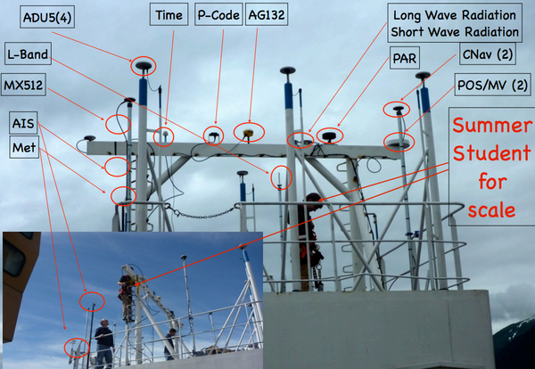
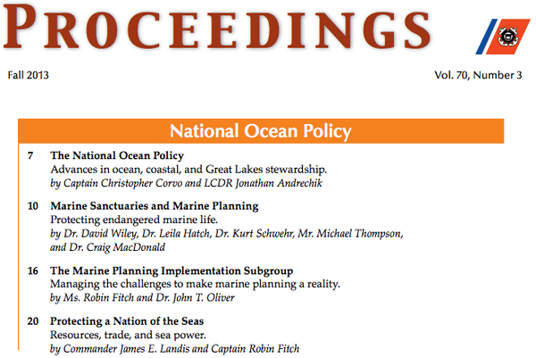

11.22.2013 12:40
NextGov Bold award for Whale Alert
Congrats to Dave Wiley and everyone
who made Whale Alert possible. We are quite the large, distributed
and non-traditional team.
Nextgov Honors Feds for Innovative Tech That Saves Time, Money and Lives
What Politicians Don't Tell You About Federal Employees - Nextgov Bold Awards Finalists
Nextgov Honors Feds for Innovative Tech That Saves Time, Money and Lives
A NASA hackathon, an app to track whales and an initiative to allow federal employees to use their own smartphones and gadgets for work were among projects recognized Wednesday with the first annual Bold Awards. Nextgov received nearly 200 nominations for the contest. Our editorial staff selected 19 finalists -- individuals and teams from a dozen agencies -- that exemplify the kind of creative problem-solving, technical acumen, ambition and persistence we frequently hear about in the private sector but too seldom learn about in government. ...There were 7 winners, including:
David Wiley of the National Oceanic and Atmospheric Administration led a team to produce Whale Alert, a mobile app to prevent endangered right whales from colliding with ships.Monica pointed out a minor note to the above description. It would really be better stated that this app is for preventing ships from colliding with the right whales.
What Politicians Don't Tell You About Federal Employees - Nextgov Bold Awards Finalists
DAVID WILEY, LEILA HATCH and MICHAEL THOMPSON (left to right) at NOAA's Stellwagen Bank National Marine Sanctuary created Whale Alert, which provides up-to-date information about the critically endangered North Atlantic right whale, displaying data on nautical charts via iPad or iPhone platforms. To protect right whales from strikes shipthe leading cause death ofNOAA has promulgated a suite of rules and voluntary measures that affect East Coast shipping. Prior to Whale Alert, information was delivered to ships in piecemeal fashion, making compliance difficult and resulting in industry fines. With more than 17,000 downloads, the app has been highly successful improving conservation efforts.
11.15.2013 07:14
Real data has real warts
Dale Chayes just sent me a note as he
was watching one of my videos and heard me use his "real data has
real warts" quotes. Ever since Dale told me his little catch
phrase, I can't get it out of my head. It's too true.
I hadn't seen this particular talk before of Dale's, but I'm pretty sure that he said that quote to me a few years before this talk.
Geophsyical Data: "Real data has real warts"
ChayesDeesNoonBalloon2010-11-09.pdf
Some pretty awesome slides in that talk. This one particularly spoke to me with the antenna farm...
I hadn't seen this particular talk before of Dale's, but I'm pretty sure that he said that quote to me a few years before this talk.
Geophsyical Data: "Real data has real warts"
ChayesDeesNoonBalloon2010-11-09.pdf
Some pretty awesome slides in that talk. This one particularly spoke to me with the antenna farm...

11.14.2013 10:31
Mapping Big Data with Google's Cloud Platform
Google
Maps API G+ post
Strata London: Ships Around the World: Processing and Visualizing Large Global Datasets with the Google Cloud.
Mano's G+ post. The slide deck G+ post and the presentation is here: slides
I really appreciate the great audience questions and the discussions with folks at the office hours with the Cloud team were awesome!
Strata London: Ships Around the World: Processing and Visualizing Large Global Datasets with the Google Cloud.
Mano's G+ post. The slide deck G+ post and the presentation is here: slides
I really appreciate the great audience questions and the discussions with folks at the office hours with the Cloud team were awesome!
11.10.2013 09:04
Lots of happenings with Google
Too much going on to get a chance to
blog about all of it, but here are some highlights.
Tomorrow (Monday), Mano Marks and I present Ships Around the World: Processing and Visualizing Large Global Datasets with the Google Cloud at Strata London. The Google Cloud team's Amy Unruh and Felipe will present Behind the Data Sensing Lab: Building a Highly Scalable and rapid data collection and analysis just before us at 1:15. Then they will be leading office hours at 2:45 right after Mano and I present.
Then Francesc Campoy presents Go see all the ships in the world at DevoXX on Thursday in Belgium.
Ujaval is visiting from India. I got to help him on the QGIS GME connector by doing code reviews. It was definitely fun to see how a QGIS plugin works!
Tomorrow (Monday), Mano Marks and I present Ships Around the World: Processing and Visualizing Large Global Datasets with the Google Cloud at Strata London. The Google Cloud team's Amy Unruh and Felipe will present Behind the Data Sensing Lab: Building a Highly Scalable and rapid data collection and analysis just before us at 1:15. Then they will be leading office hours at 2:45 right after Mano and I present.
Then Francesc Campoy presents Go see all the ships in the world at DevoXX on Thursday in Belgium.
Ujaval is visiting from India. I got to help him on the QGIS GME connector by doing code reviews. It was definitely fun to see how a QGIS plugin works!
11.07.2013 13:20
USCG Proceedings article on Marine Spatial Planning
http://www.uscg.mil/proceedings/archive/2013/Vol70_No3_Fall2013.pdf
Marine Sanctuaries and Marine Planning by Wiley, Hatch, Schwehr, Thompson and MacDonald.
Marine Sanctuaries and Marine Planning by Wiley, Hatch, Schwehr, Thompson and MacDonald.

11.04.2013 09:17
FORTRAN and go to / goto
This is just out and out evil. Do not
use go to / goto. Don't use fortran. Just don't. And if you use
fortran and gotos, never use goto with a list of jump points and an
expression to give yourself multiple destination options for
"fan-out" or case like statements.
Here is me trying to figure out how gotos really work in fortran. And I didn't get through all the cases that I needed to try before I ran out of gas.
Here is me trying to figure out how gotos really work in fortran. And I didn't get through all the cases that I needed to try before I ran out of gas.
c -*- fortran -*-
c
c Using gfortran 64bit on mac osx 10.8 from fink
c GNU Fortran (GCC) 4.8.2
c Compiler warnings (if anything new) included after each code
program wtf
go to 130
c
write(6,*) 'anything'
80 write(6,*) 'label 80'
130 write(6,*) 'label 130' ! jumped here
c
end
c This code printed "label 130"
c
c
c 80 write(6,*) 'yes' c
c 1
c Warning: Label 80 at (1) defined but not used
c
c ========================================
c
program wtf
c
assign 130 to myjump
go to myjump
c
write(6,*) 'anything'
80 write(6,*) 'yes'
130 write(6,*) 'label 130' ! jumped here
c
end
c
c The code printed "label 130"
c
c Warning: Deleted feature: ASSIGN statement at (1)
c
c 130 write(6,*) 'this is statement 130' c
c 1
c Warning: Label 130 at (1) defined but
c
c ========================================
c
program wtf
c
assign 130 to myjump
assign 80 to myjump
go to myjump
c
write(6,*) 'anything'
80 write(6,*) 'yes 80' ! jumped here
130 write(6,*) 'this is statement 130'
c
end
c
c ========================================
c
program wtf
c
go to (80, 130), 2 ! use the 2nd item in the list
c
write(6,*) 'anything'
80 write(6,*) 'yes 80'
130 write(6,*) 'this is statement 130' ! jumped here
c
end
c
c ========================================
c
program wtf
c
go to (80, 130), 3
c
write(6,*) 'anything' ! NO jump. ran from here down
80 write(6,*) 'yes 80'
130 write(6,*) 'label 130'
c
end
c
c The code did not jump and I saw anything, yes 80 and label 130
c
c ========================================
c
program wtf
c
assign 130 to mytest
go to mytest ,(3,5)
c
write(6,*) 'anything'
80 write(6,*) 'yes 80'
130 write(6,*) 'this is statement 130'
c
end
c
c DOES NOT COMPILE
c
c Error: Label 3 referenced at (1) is never defined
c 5.f:4.24:
c
c go to mytest ,(3,5)
c 1
c Error: Label 5 referenced at (1) is never defined
c
c ========================================
c
program wtf
c ignores 80 and 130
assign 80 to mytest
go to mytest ,(80,130) ! Always jumps to where ever mytest points
c
write(6,*) 'anything'
80 write(6,*) 'yes 80'
130 write(6,*) 'this is statement 130'
c
end
I am missing cases like checking to make sure that assign and an
integer variable with the same name are two separate entities.
Additionally, if the programmer uses a reserved word (e.g. return)
for a variable or assigned label? And after all that, do other
compilers behave the same? FORTRAN is definitely a SNAFU. When I was at SIO
for grad school, I had a good number of professors tell us, the
students, that FORTRAN is the fastest language in existance. Oh
really? These same professors didn't know about data structures. I
tried talking about singly or doubly linked lists or trees and got
blank looks... especially when I rewrote their big array codes to
not be one giant blob of memory with endless memory copies. Sadly,
the reverse was true. I don't grok einstein
notation, hilber spaces or
other field theory things I was trying to learn from them. They
assumed those would be trivial to me like a linked list is. Why do
mathematicians insist on one symbol variable names and extreme
compression on their notation? I think that's my biggest problem
with math. That and studying a lot of these topics before wikipedia
was flushed out.